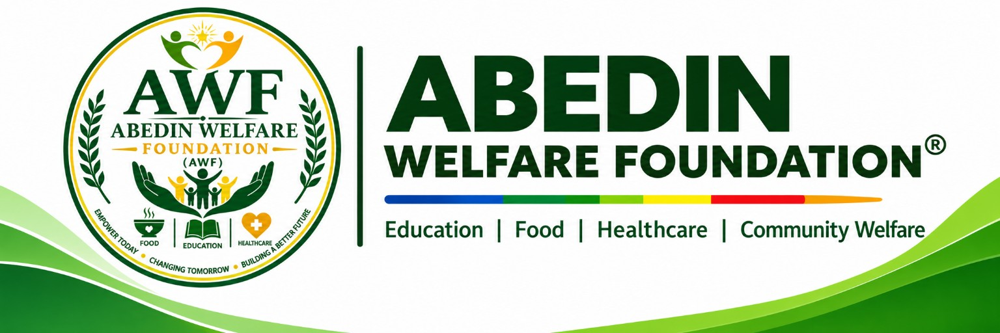

📚
Education Support
Learning support for underprivileged children, including notebooks, books and essential study materials.
जरूरतमंद बच्चों को शिक्षा, किताबें, कॉपियाँ और पढ़ाई की आवश्यक सामग्री उपलब्ध कराने में सहयोग।
Building hope through education, food assistance, healthcare support, human rights awareness and self-defence training.
Abedin Welfare Foundation (AWF) is a community welfare initiative founded by Mohammad Zainul Abedin. It aims to support underprivileged children, families and individuals through education, food assistance, healthcare support and community-focused activities.
अबेदिन वेलफेयर फाउंडेशन (AWF) एक सामाजिक कल्याण पहल है। इसका उद्देश्य शिक्षा, भोजन सहायता, स्वास्थ्य सहयोग और सामुदायिक गतिविधियों के माध्यम से जरूरतमंद बच्चों, परिवारों और लोगों की मदद करना है।
A society where every person has access to opportunity, dignity, safety and support.
ऐसा समाज जहाँ हर व्यक्ति को अवसर, सम्मान, सुरक्षा और सहयोग मिल सके।
Our focus areas are designed to support learning, wellbeing, dignity and personal safety.
Learning support for underprivileged children, including notebooks, books and essential study materials.
जरूरतमंद बच्चों को शिक्षा, किताबें, कॉपियाँ और पढ़ाई की आवश्यक सामग्री उपलब्ध कराने में सहयोग।Food distribution and ration assistance for hungry people and families facing hardship.
भूखे और कठिन परिस्थितियों का सामना कर रहे परिवारों को भोजन एवं राशन सहायता।Health awareness and support initiatives that help people understand and access basic healthcare resources.
स्वास्थ्य जागरूकता और बुनियादी स्वास्थ्य सेवाओं तक पहुँचने में सहयोग।Promoting awareness of human rights, equality, dignity and access to information.
मानवाधिकार, समानता, गरिमा और जरूरी जानकारी के प्रति जागरूकता बढ़ाना।Promoting personal safety, confidence and practical self-defence awareness through training activities.
प्रशिक्षण गतिविधियों के माध्यम से व्यक्तिगत सुरक्षा, आत्मविश्वास और आत्मरक्षा के प्रति जागरूकता।Encouraging volunteering, community participation and support for people in vulnerable situations.
स्वयंसेवा, सामुदायिक भागीदारी और जरूरतमंद लोगों के सहयोग को प्रोत्साहित करना।Abedin Welfare Foundation was started with a commitment to support underprivileged children, families and communities through education, food assistance, healthcare support and awareness activities.
इस पहल की शुरुआत जरूरतमंद बच्चों, परिवारों और समुदायों को शिक्षा, भोजन सहायता, स्वास्थ्य सहयोग और जागरूकता गतिविधियों के माध्यम से सहयोग देने के संकल्प के साथ की गई।
“Small acts of kindness can create meaningful change.”
Your voluntary contribution can help support education, food assistance, healthcare and community welfare activities.
आपका स्वैच्छिक आर्थिक सहयोग शिक्षा, भोजन सहायता, स्वास्थ्य और सामाजिक कल्याण की गतिविधियों में मदद कर सकता है।
Scan the QR code using any UPI app to make a voluntary contribution.
स्वैच्छिक सहयोग देने के लिए किसी भी UPI ऐप से QR कोड स्कैन करें।
Please verify the payee name and payment details in your UPI app before confirming a payment. Keep your payment receipt for your records.

For volunteering, collaboration and general enquiries, please contact us.
स्वयंसेवा, सहयोग और सामान्य जानकारी के लिए हमसे संपर्क करें।